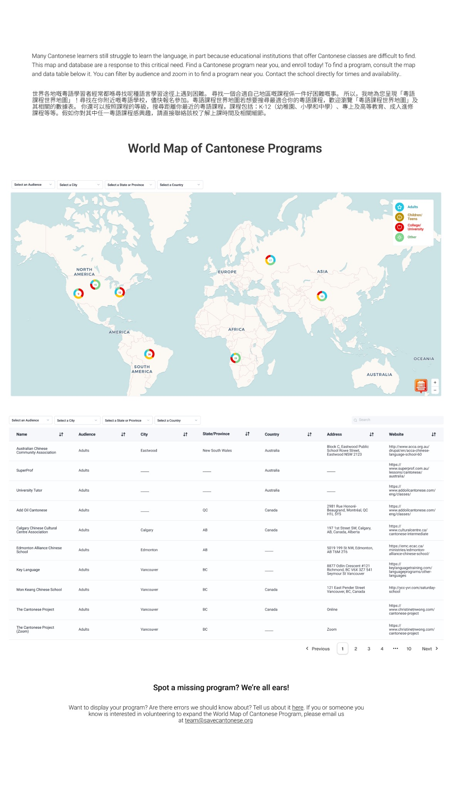

01
Understand
Clarify how programs were currently submitted, reviewed, published, and discovered — and where the existing workflow was breaking down.
Designing a clearer way for people to find Cantonese learning programs — while helping Save Cantonese move from a developer-dependent update process toward a more maintainable system.

Save Cantonese is a nonprofit dedicated to strengthening the Cantonese-speaking and learning community. Its grassroots advocacy promotes education through local language programs, connects the Cantonese diaspora worldwide, and supports the protection of culture and identity.
The existing World Map was intended to help learners discover Cantonese programs around the world. But the larger challenge was not simply making a map look better: the organization also needed a way to keep program information accurate and current.
The project brief identified a major operational bottleneck: submissions required R-code knowledge to review and publish. That created delays, a growing backlog, and an inefficient workflow that depended on developers.
The design process centered on understanding what Save Cantonese actually needed to maintain the map. Through client conversations, we translated the organization's pain points into concrete product requirements before deciding on the final interface.
Clarify how programs were currently submitted, reviewed, published, and discovered — and where the existing workflow was breaking down.
Use client conversations to distinguish the organization's must-haves from interface ideas: reliable data, easier review, and a map that learners could navigate intuitively.
Compare existing map patterns and identify useful conventions for markers, clustering, filters, side panels, and list-based access.
Connect the public-facing map and table with verification and approval logic so the design addressed both the learner and the organization maintaining it.
Rather than treating the map as a purely visual redesign, we used client discussions to focus the project on the operational issues behind it. The resulting direction connected what learners needed to see with what Save Cantonese needed to manage behind the scenes.
Competitive analysis helped us decide which map conventions were worth keeping and which patterns would make the experience harder to use.
The final direction combined a refined public interface with a more systematic process for reviewing and updating submitted programs.
The map supports filtering by audience, city, state or province, and country, while markers communicate program categories directly on the map.
The visual system establishes a clear type hierarchy and uses color to distinguish the audience categories throughout the map. The full palette and its application are shown in the design system below.
The implementation connected the interface to a data workflow using Next.js, Tailwind CSS, MapLibre GL, Google Apps Script, and Google Sheets.
This technical approach supported the larger product goal: making the map easier to maintain while keeping the public-facing experience clear and searchable.
The project started as a map experience, but the process revealed that the quality of the map depended on the workflow behind it. A useful public interface was only one part of the solution; the organization also needed a repeatable way to verify and update the information users rely on.
That led to a product direction where discovery, filtering, program details, verification, and data maintenance work together instead of being treated as separate pieces.
This case study is based on the NOVA F25 onboarding presentation for Save Cantonese World Map Programs. Project details and impact figures are presented as documented in that deck.